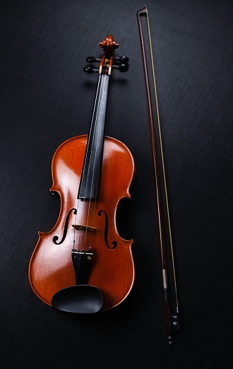

The String Instruments are the stars of the orchestra and those who are in the front for the public to see. While they don't produce all the music heard, they tend to have by far the most people in any group in orchestra. Although they may look extremely similar, they are extremely diverse in sound and selection. The main string instruments in orchestra are Violin (of course), Viola, Cello, Double Bass, and Harp.
String instruments are played by drawing a bow across a set of strings, or by plucking the strings with the fingers.
-
Violins are the most popular of the string ensemble, and are beautiful small wooden instruments that create a bright sound.
 -
Violas are the bigger brother of the Violin, and are a slightly larger and deeper instrument made of the same material and in extremely similar design.
-
Cellos are a larger string instrument thats usually played upright unlike the violin. It is quite a bit larger and has an extremely deep sound.
-
The Double Bass is an even larger instrument that is similar to the cello but quite a bit larger and deeper. Its purpose stems in its "bass" as shown in the name.
Here is an example of a beautiful String Quartet playing Ravels String Quartet in F major. Enjoy! Or don't. Up to you.